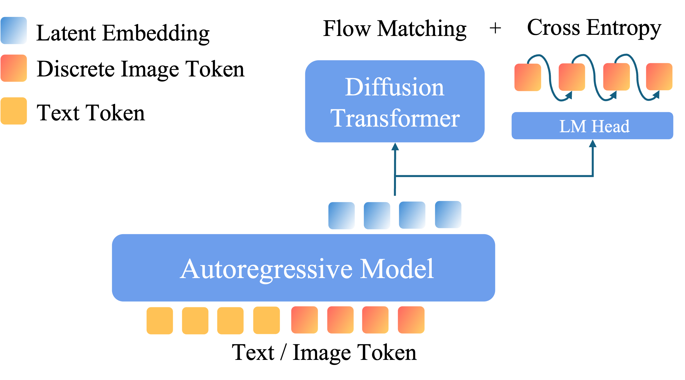

Introducing BLIP3o-NEXT, a improved multimodal foundation model that advances the state of image generation. BLIP3o-NEXT demonstrates exceptional capability in producing high-fidelity images, with a particular strength in accurately following complex user instructions and rendering detailed text.
AR + Diffusion Architecture
Combines autoregressive and diffusion models for high-quality image generation.
Discrete Image Token Supervision
Uses discrete image tokens as additional supervision.
Reinforcement Learning
GRPO training enhances prompt alignment and text rendering accuracy.
Fully Open-Source
All training code, datasets, and models released for full reproducibility.
AR + Diffusion Architecture: Similar with BLIP3o, BLIP3o-NEXT generates intermediate features via the autoregressive model and then conditions on these features to generate images through the diffusion model.
Discrete Image Token Supervision: We add discrete SigLIP-2 image token prediction as extra training supervision, jointly optimizing CrossEntropy and the diffusion objective. These two objective training not only accelerates convergence in the image generation training but also yields better prompt alignment and image quality.
Reinforcement Learning: The introduction of discrete image tokens unlocks seamless compatibility with existing language-model RL framework. Using Group Relative Policy Optimization (GRPO), we train the BLIP3o-NEXT to improve prompt alignment and text rendering in image generation.
Fully Open-Source: We release every component of BLIP3o-NEXT: datasets, model weights (including pretrian, instruction tuning and RL model), and complete training pipelines for both multimodal pretraining, instruction-tuning and RL.
AR + Diffusion
In the Autoregressive + Diffusion architecture, the autoregressive model (a language model or vision language model) first takes in a user prompt and generates continuous latent embeddings. The diffusion model then generates images conditioned on the latent embeddings.
Discrete Image Token Supervision

Figure 1: BLIP3o-NEXT architecture with discrete image token supervision. The autoregressive model generates discrete image tokens, and their hidden representations serve as conditions for the diffusion model. We jointly optimize both CrossEntropy and Flow-Matching objective during training.
In our training pipeline, the AR model learns to predict discrete image tokens via teacher forcing, and the hidden states of these predicted discrete tokens are used as conditioning inputs for the diffusion model. We jointly optimize a cross-entropy objective on those discrete tokens alongside the diffusion loss for end-to-end image generation. This approach brings several key benefits:
1)Discrete tokens align naturally with autoregressive architectures compared with continuous features, enabling faster training convergence compared with BLIP3o.
2)Autoregressive image token prediction excels at tasks requiring spatial structures (e.g., rendering text or generating multiple objects composition), while diffusion model excels at producing high visual-fidelity images. By having the AR model lay down a discrete "blueprint" and feeding their hidden representations into the diffusion model, we combine structural accuracy with high visual-fidelity image outputs.
3)Training the AR and diffusion model together ensures they see the same distributions at train and inference time. This joint optimization avoids mismatches that occurs when the diffusion model is trained to reconstruct from features (e.g., CLIP embeddings) while the AR model is separately trained to predict those features.
For discrete image tokens, we apply a vector-quantization (VQ) step that maps continuous SigLIP2 embeddings into a finite set of codebook entries. Training this SigLIP2 quantizer is similar to the VQ-VAE paradigm, learning both the codebook and encoder/decoder jointly to reconstruct the SigLIP2 feature. Similar to BLIP3o’s findings, semantic features can be well aligned with the autoregressive model compared with VAE latents, thus we quantize SigLIP2’s semantic representations instead of VAE latents. Also SigLIP2 can be used as the image understanding encoder, which unifies the image generation and understanding into one semantic space.
Reinforcement Learning
To further enhance prompt alignment and text rendering, we employ Group Relative Policy Optimization (GRPO) to fine-tune the autoregressive model. By introducing discrete image tokens, we seamlessly integrate with existing reinforcement learning frameworks designed for language models. We focus on two verifiable reward tasks:
1)Prompt Alignment: verifying count, color, and position (e.g., "generate two red apples," following a GenEval setup).
2)Text Rendering: scoring rendered text via an OCR-based evaluator.
During the RL training phase, the AR model samples discrete image tokens conditioned on the input prompt. The hidden states associated with these tokens are then provided to a diffusion model, which remains frozen during this process, to generate the corresponding images. A reward model subsequently evaluates each image based on prompt alignment or OCR-derived text accuracy, and these reward signals are used to update the AR model via policy gradients. This paradigm leverages and extends established RL methodologies for text generation, opening new avenues for reinforcement learning applications that incorporate both text and image modalities.
Figure 2: GRPO training pipeline for BLIP3o-NEXT. The autoregressive model generates discrete tokens, the frozen diffusion model decodes their hidden states into images, and a reward model provides feedback for policy optimization. Only the AR model parameters are updated during RL training.
Prompt Alignment
Figure 3: Training reward progression during GRPO training on GenEval dataset, showing the optimization of reward function over training steps.
Figure 4: GenEval performance improvement during GRPO training, evaluated every 50 training steps from 0 to 400 steps.
We peform GRPO training on BLIP3o-NEXT leveraging synthesized data and report the plot of the training reward, and both qualitative and quantitative results on the GenEval dataset. The reward function is the same as the official implementation of evaluation metric used for GenEval. We compare our BLIP3o-NEXT to recent strong unified multimodal foundation models, including BLIP3o, FLUX.1-dev, Metaqueries, and BAGEL.
Model
Single Obj.
Two Obj.
Counting
Colors
Position
Color Attri.
Overall
FLUX.1-dev
0.98
0.93
0.75
0.93
0.68
0.65
0.82
Metaqueries XL
-
-
-
-
-
-
0.80†
BAGEL
0.98
0.95
0.84
0.95
0.78
0.77
0.88†
BLIP3o
-
-
-
-
-
-
0.84
BLIP3o-NEXT (3B)
0.99
0.95
0.88
0.90
0.92
0.79
0.91
Table 4: Performance evaluation on GenEval. †With Prompt Rewrite.
Figure 4: Qualitative results on prompt following.
Text Rendering
Figure 5: OCR training reward progression during GRPO training, showing the optimization of OCR reward function over training steps.
We peform GRPO training on BLIP3o-NEXT leveraging synthesized data and report the plot of the training reward and quantitative results on prompts with various text. The reward function is an ORC model.
Figure 6: Qualitative results on Text Rendering.
Complete Training Recipe
Below we provide a complete training recipe for BLIP3o-NEXT, including hyperparameters and dataset compositions. This comprehensive documentation is designed to facilitate reproducibility and support the open-source research community in building upon our work.
Stage
Learning Rate
Number of Steps
Batch Size
Dataset
GPUs
Pretrain
1e-4
336K
512
BLIP3o-Pretrain
32 × H200
Finetuning
5e-5
7K
128
BLIP3o-60k + ShareGPT-4o
1 × H100
RL-Text
1e-6
900
512
Synthesis prompts
32 × H100
RL-GenEval
5e-6
400
256
Synthesis prompts
16 × H100
Table 5: Complete training recipe for BLIP3o-NEXT across different training stages.
Acknowledgements
We thank the research community for their foundational work in language models, multimodal models and diffusion models. Special thanks to the teams behind Qwen3, SANA 1.5, and SigLIP2, for their excellent contributions. We also thank Tar, to open source excellent VQ-SigLIP2.
BibTeX
@misc{chen2025blip3ofamilyfullyopen,
title={BLIP3-o: A Family of Fully Open Unified Multimodal Models-Architecture, Training and Dataset},
author={Jiuhai Chen and Zhiyang Xu and Xichen Pan and Yushi Hu and Can Qin and Tom Goldstein and Lifu Huang and Tianyi Zhou and Saining Xie and Silvio Savarese and Le Xue and Caiming Xiong and Ran Xu},
year={2025},
eprint={2505.09568},
archivePrefix={arXiv},
primaryClass={cs.CV},
url={https://arxiv.org/abs/2505.09568},
}
@misc{blip3oNext2025,
title = {BLIP3o-NEXT: A Next-Generation Multimodal Foundation Model},
url = {https://jiuhaichen.github.io/BLIP3o-NEXT.github.io/},
author = {Jiuhai Chen, Zhiyang Xu, Xichen Pan, Shusheng Yang, Can Qin, An Yan, Honglu Zhou, Zeyuan Chen, Tianyi Zhou, Silvio Savarese, Le Xue, Caiming Xiong, Ran Xu},
month = {Aug},
year = {2025}
}